{kind=link}
Series: Digital Design Fundamentals | Article 1
The forty pence chip
A small microcontroller in a reel of three thousand costs about forty pence. It holds a processor, flash, RAM, a handful of timers and a bootloader, and the supplier will happily sell you one.
The set of photomasks used to make it cost somewhere north of a quarter of a million pounds, paid once, years ago, before a single working part existed. Nothing about the forty pence recovers that. The forty pence is glass, gas, electricity, packaging and test, spread over tens of millions of parts. The quarter of a million was the price of being allowed to start.
This article is about that gap. It covers the photomask itself, the sequence of masks that builds a metal-oxide-semiconductor field-effect transistor (MOSFET) out of a blank wafer, why the number of masks keeps rising, the approximate cost of a mask set at each process geometry, and what a respin costs when the first attempt is wrong. It targets anyone learning digital design who has been told "the transistor is a switch" and would like to know where the switch comes from, and anyone weighing a custom chip against a field-programmable gate array (FPGA).
A mask is a stencil, and there is one per patterned layer
A chip is not carved. It is built up in layers, and every layer that needs a pattern gets that pattern from a photomask: a flat plate of fused silica, usually a 6 inch square a quarter of an inch thick, carrying an opaque chrome image of the shapes for that one layer. Fused silica is amorphous silicon dioxide, chosen because it is transparent at the exposure wavelength and barely expands when the plate warms up. In the trade it is often called a quartz plate, though it is not quartz: quartz is crystalline, fused silica is not. The mask is glass. The wafer it prints onto is single-crystal silicon. They are not the same material.
Three facts about the mask decide most of the economics that follow.
It is not the same size as the chip. In a modern scanner the mask, called a reticle, is drawn four times larger than the pattern it prints. The optics demagnify the image by four on its way to the wafer, so a 1 micrometre chrome feature on the plate prints a 250 nanometre feature in resist. Making the plate is therefore easier than making the chip, which is the only reason the plate can be made at all.
One exposure covers a small area. The reticle field is roughly 26 mm by 33 mm at the wafer. A 300 mm wafer holds a few hundred of those fields, and the scanner steps across the wafer exposing them one at a time. A die larger than the reticle field cannot be printed in one shot, which is a hard ceiling on single-die size and one of the arguments for chiplets.
One mask means one layer, one shot. The mask has no adjustments. Every change to the design, however small, on whatever layer, means a new plate for that layer. This is why a bug found after tape-out is expensive in a way that software bugs are not.
The resolution the scanner can print follows the Rayleigh relation:
smallest half-pitch = k1 x wavelength / numerical aperture
with k1 a process factor around 0.3 in practice. Deep ultraviolet immersion
lithography uses 193 nm light and a numerical aperture of about 1.35, giving
roughly a 40 nm half-pitch in a single exposure. That number is the wall the
industry has been climbing over since 2005, and the way it climbed over is the
reason mask counts exploded. More on that below.
Building an inverter's transistors, one mask at a time
The complementary metal-oxide-semiconductor (CMOS) process needs two kinds of transistor: an nMOS, which conducts when its gate is high, and a pMOS, which conducts when its gate is low. Both are built simultaneously on the same wafer, and the sequence below produces one of each.
The starting material is a polished slice of single-crystal silicon, lightly doped p-type, 300 mm across and under a millimetre thick.
1. n-well (mask 1). A pMOS needs to sit in n-type silicon. The n-well mask opens windows where phosphorus or arsenic is implanted and driven in, creating tubs of n-type material inside the p-type wafer. Every pMOS on the chip lives in one of these.
2. Isolation (mask 2). Trenches are etched between the regions that will become transistors and filled with oxide. This is shallow trench isolation, and it stops neighbouring devices leaking into each other. The mask defines the active areas, meaning everywhere a trench is not.
3. Gate oxide. A thin insulating layer is grown over the whole active area, a few atoms thick at modern nodes. No mask: it is grown everywhere and removed later where it is not wanted. This layer is the "oxide" in MOSFET, and the capacitor it forms lets a voltage on the gate control the silicon underneath without any current flowing into the gate.
4. Gate (mask 3). Polysilicon is deposited over the whole wafer, then patterned. What survives is the gate electrode. The width of that stripe where it crosses an active area is the channel length, historically the number a process is named after: the 130 nm process drew a 130 nm gate.
This is the most critical mask in the set. Channel length sets drive current and switching speed, so its dimensional control drives the entire process.
5. Source and drain (masks 4 and 5). Dopant is implanted on both sides of the gate: n-type for the nMOS regions, p-type for the pMOS regions, so two masks, each blocking the areas the other one implants. The gate itself blocks the implant from the silicon directly beneath it, so the source and drain end up self-aligned to the gate rather than aligned by the scanner. That trick, introduced around 1970, removed alignment tolerance from the most sensitive dimension on the chip and is the reason the polysilicon gate replaced the earlier aluminium one.
At this point there are transistors, and they are connected to nothing.
6. Contacts (mask 6). Oxide is deposited over everything and holes are etched down to each source, drain and gate, then filled with tungsten. These are the plugs the wiring connects to.
7. Metal 1 (mask 7), via 1 (mask 8), metal 2 (mask 9), and so on. Each metal layer is a mask, and each layer of vias joining two metals is another mask. Modern logic processes stack ten to fifteen metal layers: the lowest are thin and dense for wiring inside a standard cell, the highest are thick and wide for power distribution and long-distance signals.
8. Passivation and pads (final masks). A protective layer over the whole die, with openings where bond pads or bumps need to make contact with the outside world.
Counting: two masks before the transistors exist, three to make them, one for contacts, and then two per metal level for the rest. A simple two-metal process lands around twelve masks. A fifteen-metal modern logic process is already past forty before any of the complications below.
{kind=link}
How the switch actually switches
The masks have produced a structure. Nothing so far explains why a voltage on a plate of metal sitting over an insulator should control a current flowing underneath it, several nanometres away, through material the plate never touches.
Start with the device at rest. The source and drain are islands of n-type silicon in a p-type substrate, which makes two diodes back to back. Put a voltage across them and one of the two is always reverse biased, so no useful current flows between source and drain no matter what the drain voltage does. The transistor is off, and it is off because there is nothing joining the two islands.
Now raise the gate. The gate, the oxide and the silicon underneath form a capacitor: two conductors separated by an insulator. Charge on the gate therefore pulls an equal and opposite charge to the silicon surface, without a single electron crossing the oxide.
That induced charge arrives in two stages.
Below the threshold, the surface merely empties. A positive gate repels the holes that a p-type substrate is full of, pushing them down and away. What is left behind is a depleted layer, carrying no mobile charge at all. There is still no path from source to drain.
Above the threshold, the surface changes type. Push harder and the gate starts attracting electrons rather than just repelling holes. They gather in a thin sheet at the oxide interface, and where there was p-type silicon there is now a film of n-type silicon a few nanometres thick. That film is the channel, and it joins the source island to the drain island. The gate voltage at which this happens is the threshold voltage, and it is one of the numbers a process is built around.

Once the channel exists, a voltage between drain and source moves electrons along it. More gate voltage pulls in more electrons, which lowers the channel resistance and raises the current. The transistor is not a mechanical contact being closed. It is a resistor whose value is set by a voltage on a capacitor plate.
Four consequences run through everything in this series.
The gate draws no steady current. It is one plate of a capacitor, so a finished logic gate can hold its inputs at a value forever and spend nothing doing it. Only the transitions cost energy, because each one charges or discharges that capacitance. This is why complementary metal-oxide-semiconductor logic displaced the alternatives, and why power scales with switching activity.
Thin oxide means a stronger grip. Bring the plate closer and the same voltage induces more charge, so the device switches at a lower voltage and carries more current. Hence gate oxides a handful of atoms thick, and hence the industry moving to hafnium-based insulators once silicon dioxide could get no thinner without leaking outright.
Short channels are fast and leaky. A shorter channel is a shorter distance for electrons to cross, so the device is quicker, which is the whole point of shrinking. It also means the drain sits closer to the source and starts influencing the channel that the gate is supposed to control alone. Every structure in the modern device list, from FinFETs to gate-all-around nanosheets, exists to wrap the gate further around the channel and win that argument back.
Off is not zero. Below the threshold the current falls exponentially rather than to nothing, so several billion transistors that are all switched off still add up to a measurable leakage current. Standby battery life is largely a fight with that number.
The pMOS works the same way with every sign reversed. It sits in the n-well from mask 1, its source and drain are p-type, and pulling the gate below its source attracts holes to the surface to form a p-type channel. An nMOS conducts when its gate is high; a pMOS conducts when its gate is low.
That pair of sentences is the entire input to the next article. Two switches, each closed by the opposite condition, each with an insulated gate that costs nothing to hold. Everything in a logic library is built by wiring those two kinds of switch into networks.
What one masking step actually involves
Every one of those numbered steps expands into the same loop. The mask count multiplies its cost and its yield risk.

Photoresist is a polymer whose solubility changes where light hits it. Expose, develop, and the mask pattern now exists in resist on the wafer. Etch, and it exists in the film underneath. Strip the resist, and the layer is finished.
Two consequences fall out of the loop.
A wafer visits the scanner once per mask, and the scanner is the most expensive tool in the fab. Mask count therefore drives cycle time and wafer cost together, not just the one-off cost of the plates. A forty-mask flow takes six to eight weeks of processing; an eighty-mask flow takes three months or more.
Every step is an opportunity to lose the die. A single particle in one exposure kills the chips it lands on. With eighty steps, per-step yield has to be extraordinary before the product of them is usable, which is why fabs are obsessive about contamination and why defect density, not lithography, usually limits how large a die can economically be.
Why the mask count keeps climbing
Single-exposure 193 nm immersion lithography stops at roughly 40 nm half-pitch, and the industry reached that around the 32 nm node. The features kept shrinking anyway. Three mechanisms did it, and all three cost masks.
Multiple patterning. Split one dense layer into two or more sparser layers, each printable on its own, and superimpose them. Litho-etch-litho-etch (LELE) turns one mask into two, LELELE into three. Self-aligned double and quadruple patterning (SADP, SAQP) print a sparse grid and use deposited spacers to halve the pitch, then need cut masks to remove the unwanted segments. A single logical layer such as metal 1 can consume four or five plates at 10 nm and 7 nm.
More structure per transistor. A planar transistor is a stripe of poly over a flat active area. A FinFET is a set of vertical fins, needing a fin-definition mask and fin-cut masks. A gate-all-around nanosheet device stacks channels vertically and adds its own patterning steps. Extra masks buy tighter electrostatic control of the channel, which keeps the switch behaving like a switch at these dimensions.
Extreme ultraviolet lithography pushes the other way. EUV uses 13.5 nm light prints in a single exposure a pattern that deep ultraviolet needed three or four exposures to build up, so it removes masks from the critical layers even as it raises the cost per mask sharply. It also abandons the quartz plate. Nothing is usefully transparent at 13.5 nm, so an EUV mask is a mirror rather than a stencil: a low-expansion glass blank, about forty alternating molybdenum and silicon layers to reflect the light, and a tantalum-based absorber patterned on top. That construction is a large part of an EUV plate's price. It also explains why 7 nm and 5 nm did not carry on doubling their mask counts: EUV collapsed several of the worst multi-patterned layers back into one plate each.
| Node | Typical mask count | Metal layers | Masks in the metal stack | What is driving it |
|---|---|---|---|---|
| 250 nm | 20 to 24 | 4 to 5 | 8 to 10 | Planar, aluminium wiring, single exposure everywhere |
| 180 nm | 24 to 28 | 5 to 6 | 10 to 12 | More metal layers |
| 130 nm | 28 to 32 | 6 to 8 | 12 to 16 | Copper interconnect arrives |
| 90 nm | 32 to 36 | 7 to 9 | 14 to 18 | Strained silicon |
| 65 nm | 36 to 40 | 8 to 10 | 16 to 20 | Immersion lithography arrives |
| 40 nm | 40 to 45 | 9 to 11 | 18 to 22 | Immersion at the limit, more resolution enhancement |
| 28 nm | 45 to 50 | 10 to 12 | 20 to 25 | Last node before multiple patterning is unavoidable |
| 16 nm | 55 to 65 | 11 to 13 | 24 to 32 | FinFET, and double patterning on the lower metals |
| 7 nm | 75 to 85 | 13 to 15 | 32 to 42 | Multi-patterning at its worst, early EUV |
| 5 nm | 80 to 90 | 14 to 16 | 34 to 44 | EUV on many critical layers, extra device-level masks |
| 3 nm | 85 to 100 | 15 to 18 | 36 to 48 | More EUV layers, gate-all-around structures |
The metal stack is the reason the totals climb so steadily. Each metal level needs a mask for the wires and another for the vias beneath them, so a level costs two plates, and the lowest two or three levels need multiple patterning at 16 nm and below. Roughly half of a modern mask set is wiring.
Treat these as ranges, not specifications. Every foundry has several flavours of each node, and options such as extra metal layers, embedded flash, high-voltage devices or radio-frequency passives add masks on top.
Mask set cost, in round numbers
Mask cost is not published in any consistent way, and real quotes are covered by non-disclosure. What follows are the orders of magnitude generally cited in the public literature and in multi-project wafer programme pricing. Use them for deciding which node to think about, and never for a purchase order.
| Node | Full mask set (A0) | Metal-only spin (A1) | Per-plate feel |
|---|---|---|---|
| 250 nm | £50k to £120k | £15k to £40k | A few thousand each, no resolution enhancement |
| 180 nm | £100k to £250k | £30k to £80k | Still cheap plates, more of them |
| 130 nm | £200k to £400k | £60k to £140k | Optical proximity correction starts to matter |
| 90 nm | £400k to £800k | £120k to £250k | Correction on most layers, phase shift on critical ones |
| 65 nm | £700k to £1.5M | £200k to £450k | Heavy resolution enhancement |
| 40 nm | £1.5M to £3M | £400k to £900k | Critical plates cost tens of thousands each |
| 28 nm | £2M to £4M | £600k to £1.2M | The value node, still popular for exactly this reason |
| 16 nm | £4M to £8M | £1.2M to £2.5M | FinFET plus double patterning |
| 7 nm | £8M to £15M | £2.5M to £5M | Mask count and plate cost rise together |
| 5 nm | £12M to £25M | £4M to £8M | EUV plates alone are six figures each |
| 3 nm | £20M to £40M | £6M to £12M | Where "who is this for" becomes the real question |
Two things drive the climb. The plates get more numerous, as the previous table shows. And each critical plate gets more expensive, because the chrome pattern is no longer a copy of the drawn layout: optical proximity correction deliberately distorts it, adding serifs, hammerheads and scattering bars so that the diffracted image on the wafer comes out the shape you wanted. Those corrections are computed for every polygon on the layer, which is why a single advanced critical mask can take days of compute and a six-figure sum before it is written.
And the mask set is only one line in the total. Design tool licences, intellectual property blocks, engineering time, packaging, test development and qualification are usually larger. A 28 nm project is commonly quoted in the tens of millions all-in; a 5 nm one in the hundreds of millions. The mask set is the part that is easiest to point at, not the part that dominates.
Not every project buys a set. A multi-project wafer run shares one reticle between many customers, each taking a few square millimetres, and splits the mask cost accordingly. University and small-company shuttles at 180 nm or 130 nm come in at low tens of thousands, and open-source shuttles on a 130 nm process have put a small design on real silicon for a few hundred. You get a few tens of packaged parts, not a product, but for learning, for research, and for proving an idea, prototyping never touches a full mask set.
A0, A1, B0: the price of being wrong
Silicon revisions are named by a convention borrowed from the processor vendors, and it encodes exactly the distinction the two columns above draw.
A stepping name is a letter and a digit. The letter counts base layer revisions, meaning the transistors themselves. The digit counts metal revisions on top of those base layers.
| Stepping | Meaning | Letter | Digit | Masks needed |
|---|---|---|---|---|
| A0 | First silicon | A, the first | 0, no metal revisions yet | Full set, every layer |
| A1 | Metal-only spin | A, unchanged | increments to 1 | Metal and via layers only |
| B0 | All-layer spin | increments to B | resets to 0 | Full set again |
The digit climbs while the transistors stay as they are: A0, A1, A2. The moment a fix needs a different transistor rather than a different wire, the letter increments, the digit resets, and the part becomes B0 at full mask set cost. Metal spins on the new base layers then start again at B1.
A metal-only spin works because the fault is in the connections, not the devices. The fab holds partly processed wafers at the point where the transistors are finished and the wiring has not started, a stage usually called the wafer bank. A new set of metal and via plates goes on top of banked material, so an A1 pays for a fraction of the plates and skips a fraction of the processing.
Two consequences follow, and both are decisions taken long before the bug exists.
It has to be designed for. A metal fix can only rewire gates that are already on the die. Teams scatter spare cells across the floorplan, or use a gate-array style fabric, precisely so that an engineering change order has something to connect. Without that, every fix is a B0.
The time matters more than the money. An all-layer spin repeats the full flow: ten to fourteen weeks at an advanced node, six to eight at a mature one, before packaged parts come back. A metal-only spin starts from banked wafers and turns around in three to six weeks. In a market with a launch date, the schedule usually decides the argument, not the several million pounds.
This is the real reason verification budgets look the way they do. The alternative to finding a bug in simulation is a number from one of those two columns, plus a quarter of a year.
The thing the price tag is actually measuring
The natural reading of that table is that advanced silicon is expensive. Turned around, it says something closer to the truth.
Cost per transistor has fallen for fifty years. Cost per design has risen for the same fifty years. The mask set is not the price of a chip. It is the price of the decision to make a chip that is different from every other chip, paid before you know whether the design is correct.
Every structural feature of the industry follows from those two curves crossing. System on chip integration exists because once you are paying for a mask set, adding more function to the same die is nearly free, while a second die means a second set. FPGAs exist because someone else already paid for the mask set and sells you a share of it. Chiplets exist because splitting a system lets the parts that need 3 nm go there while the parts that do not stay on 28 nm and keep their cheap masks. Mature nodes stay busy for decades because a design that fits in 130 nm has no reason to pay 5 nm mask costs. The forty pence microcontroller is a mask set from years ago, fully amortised, still printing.
Before you pick a node
A short checklist for the moment this stops being theory.
- Work out the mask cost per unit at your expected volume first. A £3M mask set over 10,000 parts is £300 per part before anything else. Over 10 million it is 30 pence.
- Ask whether you need the density. If the design fits comfortably in 130 nm or 65 nm, the cheap masks and the mature yield are worth more than the transistor count.
- Check whether a multi-project wafer covers your prototype. Two shuttle runs and a full set afterwards is usually cheaper than getting a full set wrong.
- Count your metal layers. They are two masks each, they are around half the set, and an over-generous stack is a quiet line item.
- Decide before tape-out whether you want the option of a metal-only spin, and put the spare cells in to support it. That choice separates a three week A1 from a three month B0.
- Treat tape-out as irreversible. There is no patch. Everything the verification and sign-off effort costs is being compared against the numbers in that table.
The masks make transistors. The next article wires two kinds of transistor into the smallest useful circuits: the inverter, the NAND and the NOR, and the pull-up and pull-down networks that decide why those three are the gates the libraries are built from.
Next in the series: pull-up and pull-down networks, and why a static CMOS gate is always inverting.